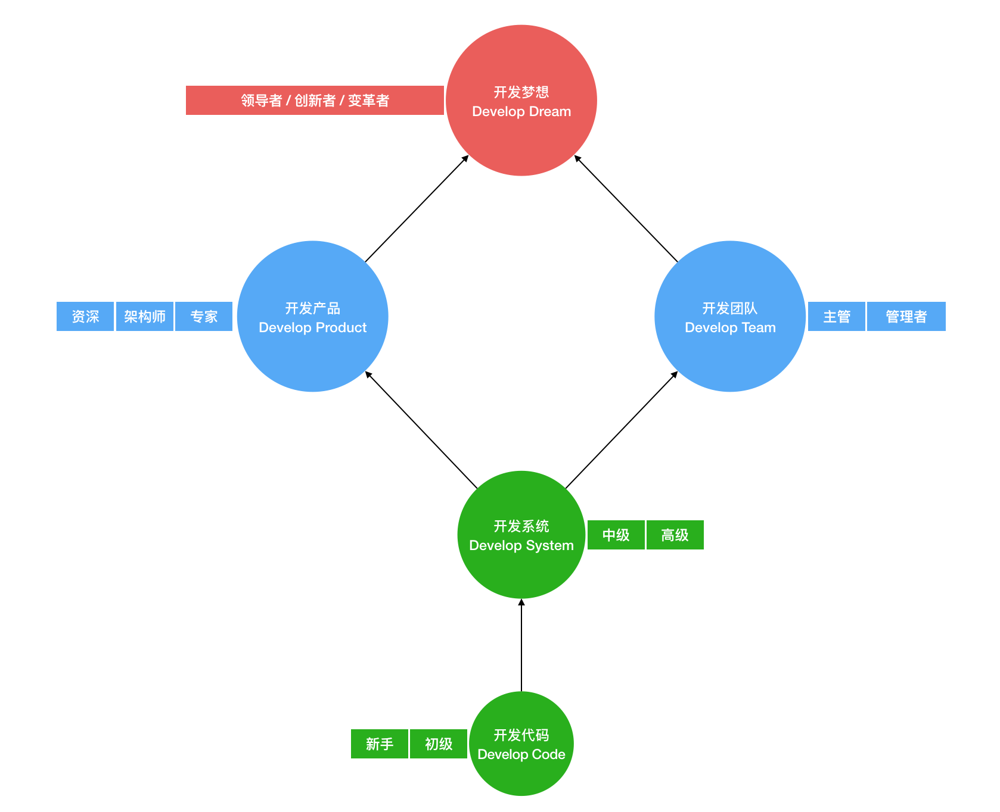

- 00 开篇词 程序行知：走在同样的路上，遇见自己的风景.md
- 01 初心：为什么成为一名程序员？.md
- 02 初惑：技术方向的选择.md
- 03 初程：带上一份技能地图.md
- 04 初感：别了校园，入了江湖.md
- 05 架构与实现：它们的连接与分界？.md
- 06 模式与框架：它们的关系与误区？.md
- 07 多维与视图：系统设计的思考维度与展现视图.md
- 08 代码与分类：工业级编程的代码分类与特征.md
- 09 粗放与精益：编程的两种思路与方式.md
- 10 炫技与克制：代码的两种味道与态度.md
- 11 三阶段进化：调试，编写与运行代码.md
- 12 Bug的空间属性：环境依赖与过敏反应.md
- 13 Bug的时间属性：周期特点与非规律性.md
- 14 Bug的反复出现：重蹈覆辙与吸取教训.md
- 15 根源：计划的愿景——仰望星空.md
- 16 方式：计划的方法——脚踏实地.md
- 17 检视：计划的可行——时间与承诺.md
- 18 评估：计划的收获——成本与收益.md
- 19 障碍：从计划到坚持，再到坚持不下去的时候.md
- 20 执行：从坚持到持续，再到形成自己的节奏.md
- 21 信息：过载与有效.md
- 22 领域：知识与体系.md
- 23 转化：能力与输出.md
- 24 并行：工作与学习.md
- 25 时间：塑造基石习惯（上）——感知与测量.md
- 26 时间：塑造基石习惯（下）——切割与构建.md
- 27 试试：一种“坏”习惯.md
- 28 提问：从技术到人生的习惯.md
- 29 偏好：个人习惯的局限与反思.md
- 30 写作：写字如编码.md
- 31 画图：一图胜千言.md
- 32 演讲：表达的技术.md
- 33 定义：阶梯与级别.md
- 34 晋升：评定与博弈.md
- 35 关系：学徒与导师.md
- 36 核心：安全与效率——工程技术的两个核心维度.md
- 37 过程：规模与协作——规模化的过程方法.md
- 38 思维：科学与系统——两类问题的两种思维解法.md
- 39 职业倦怠：如何面对？.md
- 40 局部最优：如何逃离？.md
- 41 沟通之痛：如何改变？.md
- 42 技术停滞：如何更新？.md
- 43 无法实现：困扰与反思.md
- 44 完成作品：理想与现实.md
- 45 代码评审：寄望与哀伤.md
- 46 人到中年：失业与恐惧.md
- 47 该不该去创业公司？.md
- 48 该不该接外包？.md
- 49 技术干货那么多，如何选？.md
- 50 技术分歧，如何决策？.md
- 51 技术债务，有意或无意的选择？.md
- 52 选择从众，还是唯一？.md
- 53 选择工作，还是生活？.md
- 54 侠客行：一技压身，天下行走.md
- 55 江湖路：刀剑相接，战场升级.md
- 56 御剑流：一击必杀，万剑归心.md
- 57 三维度：专业、展现与连接.md
- 58 三人行：前辈、平辈与后辈.md
- 59 三角色：程序员、技术主管与架构师.md
- 60 三视角：定位、自省与多维.md
- 61 工作之余，专业之外.md
- 62 跨越断层，突破边界.md
- 63 成长蓝图，进化跃迁.md
- 尾声 始于知，终于行.md
63 成长蓝图，进化跃迁
回顾过去，我们会清晰地看见走过来的路线，但面向未来我们又该如何走下去？但凡过往，皆为序章，过去不可变，未来才是希望，而如何去规划并管理好未来的成长进化之路，才是我们当下要面临的主要任务。
我们先从一个高度抽象的维度，来看看这条成长之路。
一、成长路线
结合我自己的经历、思考与总结，我对走过的路和未来的路概括成如下这张图：

图中描述了好几个阶段，从一个阶段到下一个阶段，都会经历一次转折。
1. 开发代码（Develop Code）
从刚走出学校到进入职场成为一名新手程序员，在最初的一两年内，你可能都处在这个阶段。不停地大量写代码，为各类系统的“大厦”添砖加瓦，像块海绵一样，把自己吸得满满的，朝 9 晚 24 地工作与学习，并不时自嘲为 “码农”。
这个阶段，你为生存所需（迫），会强烈地渴望成长。
2. 开发系统（Develop System）
三、五年后，你可能从初级、中级成长到了高级，此时你不再仅仅是写代码搬砖，而是开始负责起或大或小的整个系统。这时，你最关心的是如何用最好的技术方案，去开发、优化和完善系统。
3. 开发产品（Develop Product）
从高级走向资深、专家或架构师，你会发现你的技术执行技能已经优化到了相当的程度，这时往前多走一步，关注你所实现的系统所属的产品，会让你打开新的空间，找到更有效率和效果的实现路径，减少做无用功。
而且在技术的世界里，有很多面向开发者的技术型产品，这个领域中最适合承担起产品经理角色的就应该是各类资深的技术专家和架构师了。
4. 开发团队（Develop Team）
当你选择走上技术主管并转变为一名管理者，那么人和团队将成为你的主要开发对象，而不再是代码了，这是成为管理者的必经之路。
5. 开发梦想（Develop Dream）
梦想这个东西也会随着岁月与你相伴成长，梦想实际永远在前方，它只是不断引领着你往前走。梦想相对而言是一个感觉上很 “虚” 的概念，它可能需要产品作为载体，也需要团队来一起开发创造。如此，梦想的引力就会引发你向一名创新者或领导者的方向进化跃迁。比如说，十多年前，刚毕业时，我的梦想是成为一名架构师，如今已然实现。
以上这张图只是帮你看清从过去到未来的一条路，但如何走好这条路，就需要另一个视角维度的蓝图了。
二、战略蓝图
战略这个词，通常会和组织、公司关联在一起；那假想下，如果个人是一家公司，那么这家 “公司” 的战略该如何确定？
在分析战略之前，我们需要先分析下公司的业务。为了更好地分析清楚公司的主要业务，这里借鉴下咨询公司爱用的商业分析模型：波士顿矩阵。实际有很多不同的分析模型，我只是觉得这个最简单，比较适合像个人这样的小小微 “公司”。
波士顿矩阵模型，把公司业务分成下面四类：
- 现金牛业务
- 明星业务
- 问题业务
- 瘦狗业务
现金牛业务，比较形象地表达了就是产生现金的业务。比如谷歌的搜索业务、微软的 Windows 操作系统，都是它们的现金牛业务，有很高的市场占有率，但成长率相对就比较低了。
就个人来说，现金牛业务自然是一份稳定的工作，产生现金，维持个人生活的基本面，当然稳定之外越高薪越好。程序员这个职业就是很好的现金牛业务，行业繁荣，工作也比较稳定，专注于这个业务，不断提升薪资水平，这就是：活在当下。
明星业务，比较形象地表达了很有前景的新兴业务，已经走上了快速发展的轨道。比如：亚马逊的云计算（AWS）就是它的未来之星。而个人呢？如果你的现金牛业务（级别和薪资）已经进入行业正态分布的前 20%，那么再继续提升的难度就比较大了。
个人的明星业务是为未来 5 到 10 年准备的，就是现在还并不能带来稳定的现金流但感觉上了轨道的事。于我而言，是投资理财。人到中年，除了劳动性收入，资产性收益将作为很重要的补充收入来源，而当资本金足够大时，很可能就是未来的主要收入来源。当你开始在考虑未来的明星业务时，这就是：活在未来。
问题业务，比较形象地表达了还有比较多问题的业务领域，面临很多不确定性，也就是还没走上正轨。将来到底是死掉，还是成为新的明星业务，现在还看不清楚。比如谷歌的无人驾驶、机器人等业务领域都属于此类。
就个人而言，可能是一些自身的兴趣探索领域。于我来说，目前就是写作和英语，即使写作已经开了专栏，但并不算是稳定可靠的收入来源，主要还是以兴趣驱动，投入时间，不断探索，开拓新的维度，这就是：活在多维。
瘦狗业务，比较形象地表达了一些食之无味、弃之可惜的业务。瘦狗业务要么无法产生现金流，要么产生的现金流不断萎缩。今日之瘦狗，也许是昨日的明星或现金牛，比如像诺基亚的功能机。
就个人而言，行业在发展，技术也在进化，曾经你赖以为生的 “现金牛” 技能，可能过几年后就会落后，逐渐变成了 “瘦狗”，无法果断地放弃旧技能、开发新技能，可能就如诺基亚一般在新的时代被淘汰。固守瘦狗业务，那就是：活在过去。
业务模型构成了你的蓝图，而对你的各种业务进行与时俱进地布局与取舍，这就是战略。
三、进化跃迁
明晰了路线，掌握了蓝图，该如何完成你的成长进化跃迁呢？
跃迁是量子力学里的概念，指电子吸收能量后，突然跳到更高的能量级，这种不连续、跳跃的突变，我们称之为 “跃迁”。我借用了这个概念来类比成长，从如上定义中有几个关键点：
- 吸收能量
- 更高能量级
- 非连续跳跃
个人成长的跃迁也需要能量，在这里能量就是知识、技能和能力。完成 “能量” 的积累就需要持续地学习和实践行动，而持续行动又靠什么来驱动？内心的自驱力，这是稳定有效的驱动力来源，若没有自我驱动的力量是不太可能带来持续行动的。
学习行动计划、养成行动习惯都是为了提升行动的效率，行动积累了足够的 “能量” 后，就向更高能量级跳跃。这里更高的能量级是对知识和能力的更高维度抽象的比喻，比如：知识模型和技能体系，就比孤立的知识点和技能拥有更高的能量级。
而第三个关键点：非连续跳跃，说明这样的进化有突变的特征。而个人知识的积累与能力的提升，其实都是比较缓慢而连续的，非连续的跳跃其实体现在机会和运气上。合适的机会若没能降临，你就没法完成跃迁。
连续的成长积累是你能掌控的部分，而跃迁的机会、运气则属于概率成分，你的努力可能一定程度上提高了概率，但它并不能导致必然的跃迁结果发生。即使机会没能到临，努力过后也许有无奈，也该当无悔了。
最后，我们总结下：
从开发代码到开发梦想，你可以画出一张你的成长路线图，从而走上进化跃迁的道路；上了路后，接着你可以利用工程师的思维模式和商业工具模型，建立一个你的成长战略蓝图去指导你如何走这条路。剩下的，就让你的努力、选择和运气来帮助你完成不断的跃迁变化吧。
专栏至此，已近尾声，而如今的你，正在向哪个阶段跃迁呢？
© 2019 - 2023 Liangliang Lee. Powered by gin and hexo-theme-book.